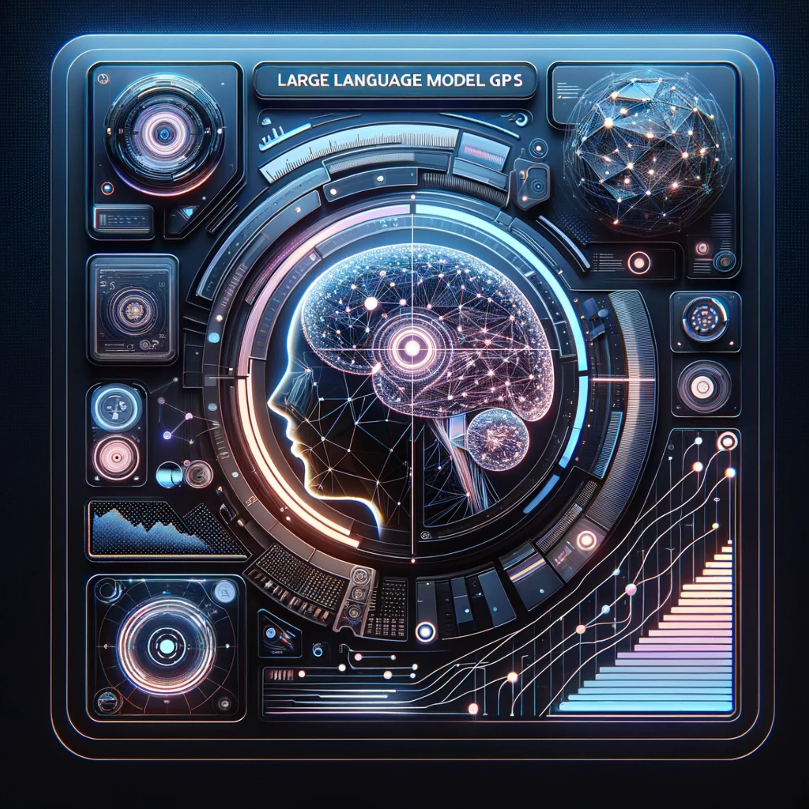
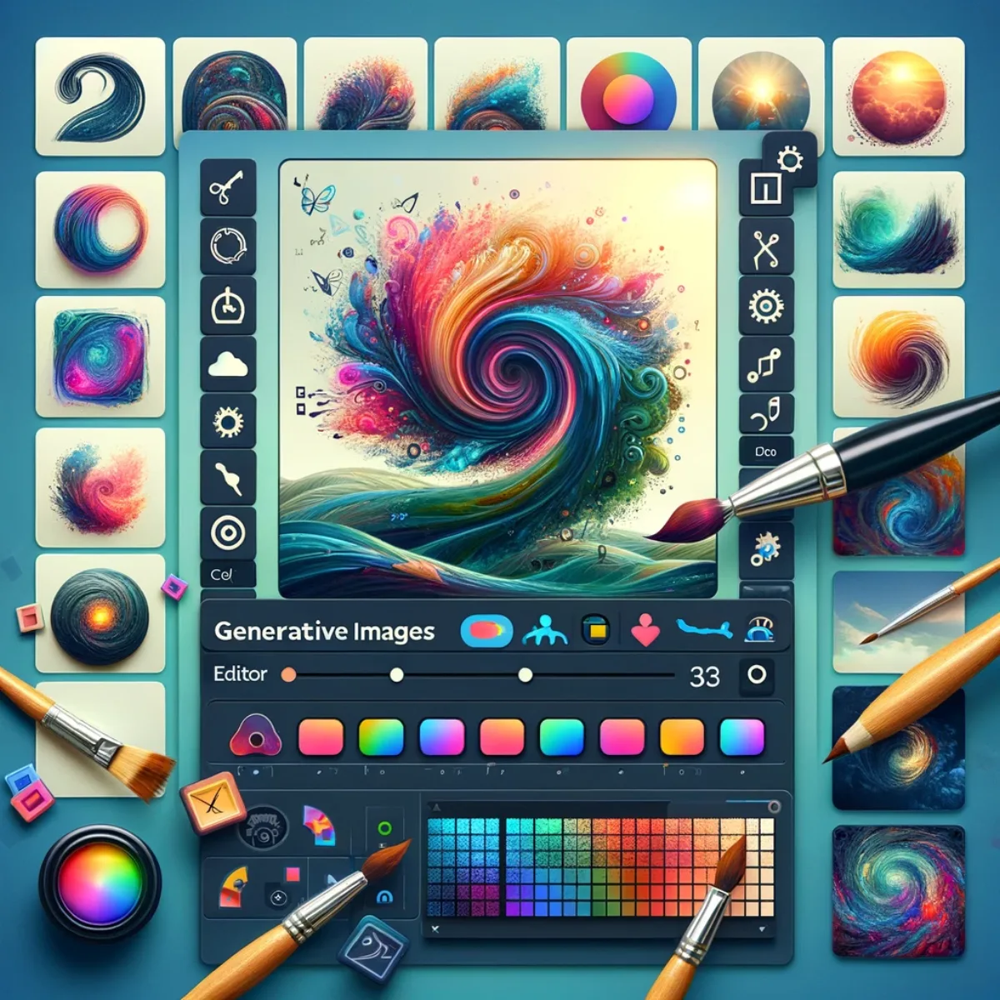
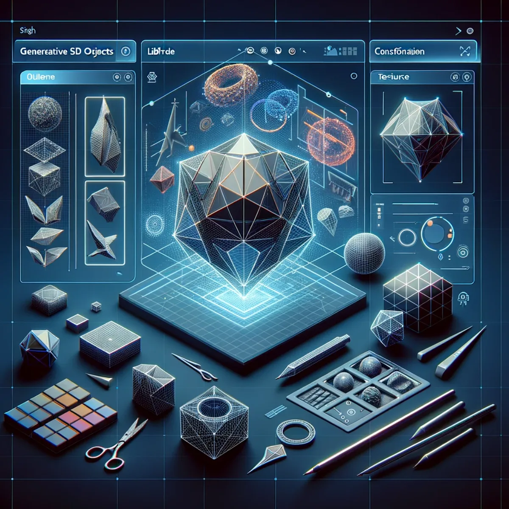
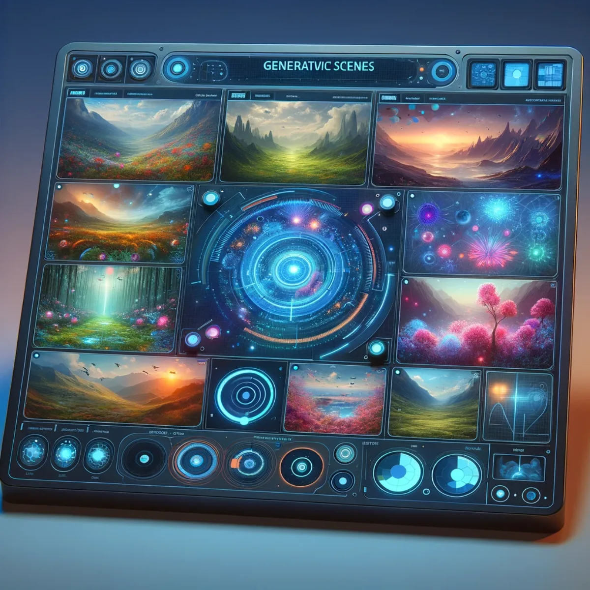
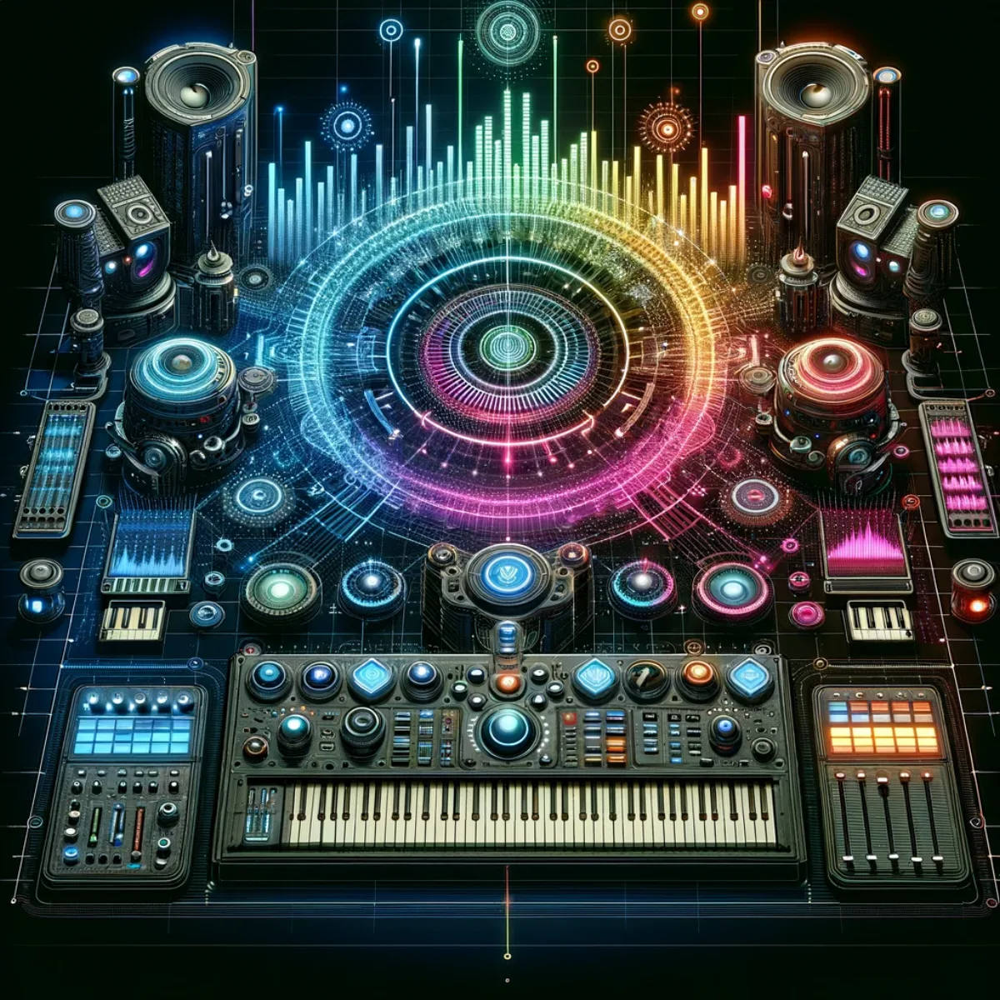

Pathways / Life & living
Generative A.I. Customisation
Nine kinds of tool, from conversation to molecules: build your own set for images, video, 3D, scenes, whole worlds, music and more, shaped to fit you and owned by you rather than rented.

Your own way to converse
Large Language Model GPTs
This is where you assemble your own large language models: the conversational tools that change how you work with knowledge. Start from what already exists, then shape it to how you think and what you need it to do. It stays yours, learns your way of working, and grows with you instead of being rented back to you a month at a time.

Code that works your way
Code Assistant GPTs
Build your own coding companion, one that understands the syntax and the intent of your software. From fixing bugs to shipping new features, you shape an assistant that fits your projects rather than a generic tool everyone else rents. It's yours to keep, and it gets sharper as you and your code grow together.

Make the images your own
Generative Images
Here you build your own image tools, with AI as brush, canvas and palette. Whether it's graphic design or digital art, you choose the pieces and arrange them to suit how you create. The setup is yours to keep and custom to your eye, not a one-size-fits-all subscription.

Direct it your own way
Generative Videos
Build your own video workshop and take the director's chair. Bring together the tools that fit your storytelling: edit, enhance and explore, with a setup shaped to how you work. It stays yours and evolves as your craft does, rather than resetting every time a subscription lapses.

Give your ideas volume
Generative 3D Objects
Shape the unseen by building your own 3D toolkit. Give your ideas form in digital space: design, modify and materialise concepts with the tools that suit you. This is a new dimension of making, and the workshop you build here is yours to keep and grows with what you attempt.

Craft your own reality
Generative Scenes
Build your own scene studio and step into landscapes of your making: lush forests, still lakes, or the surreal terrain of distant planets. Choose the tools, then adjust, morph and fine-tune each environment down to the last leaf or pebble. The studio is yours, custom to your imagination, and it deepens as you use it.

Design whole worlds of your own
Generative Worlds
Build your own world-making toolkit and create entire universes. Bring together the tools to sculpt planets and craft ecosystems, fine-tuning everything from mountain ranges to weather patterns. You become the architect, and the setup you build is yours to keep and grows with your ambition. See it fully realised in World Builder.

Compose it your own way
Generative Music & Sounds
Build your own studio for music and sound. Bring together virtual instruments and mixers into a setup that fits how you make, whether you are a seasoned musician, a sound engineer or a complete beginner. It's yours to keep and grows with your ear. Hear it in practice on Music Creation, or listen to Luke's own GenAI music as I C. Infinity on YouTube.

Chemistry in your own hands
Generative Molecules
Build your own molecular workbench and work at the atomic level, modelling and manipulating the building blocks of matter. For educators, students and researchers, it's a digital chemistry set you assemble yourself: craft complex organic structures, visualise molecular interactions, and explore the vast universe inside atoms. The workbench is yours and deepens the more you explore.
Keep exploring